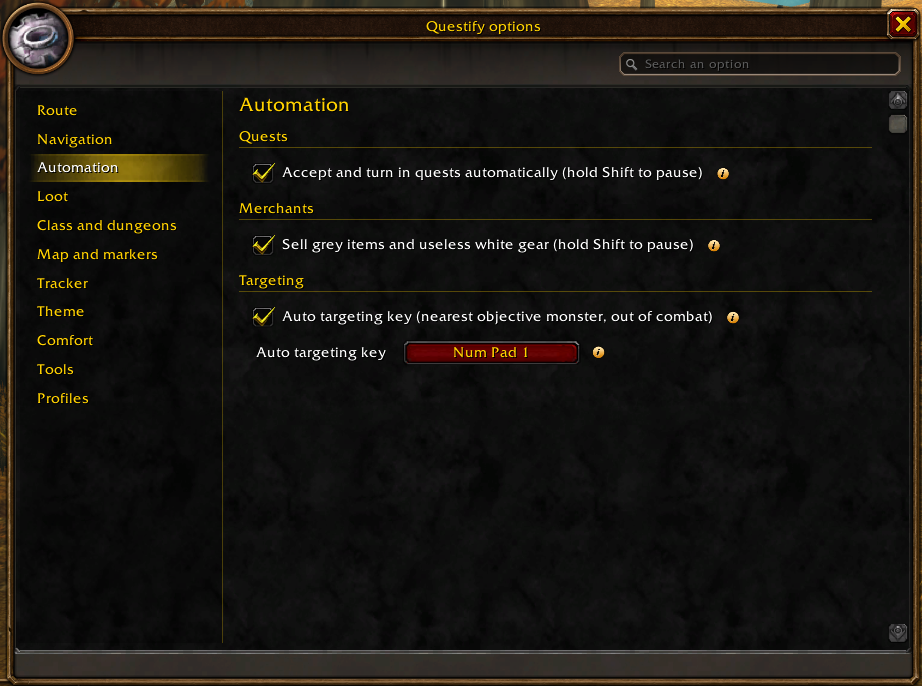

Every option in eleven sections in the sidebar, and a search on their labels, keywords and help, accent-insensitive.
The “i” icon next to each setting explains what it does. Keys are set right there: click the button, then press a key.
Profiles keep every setting and the tracker layout, and can be shared as a text string.
